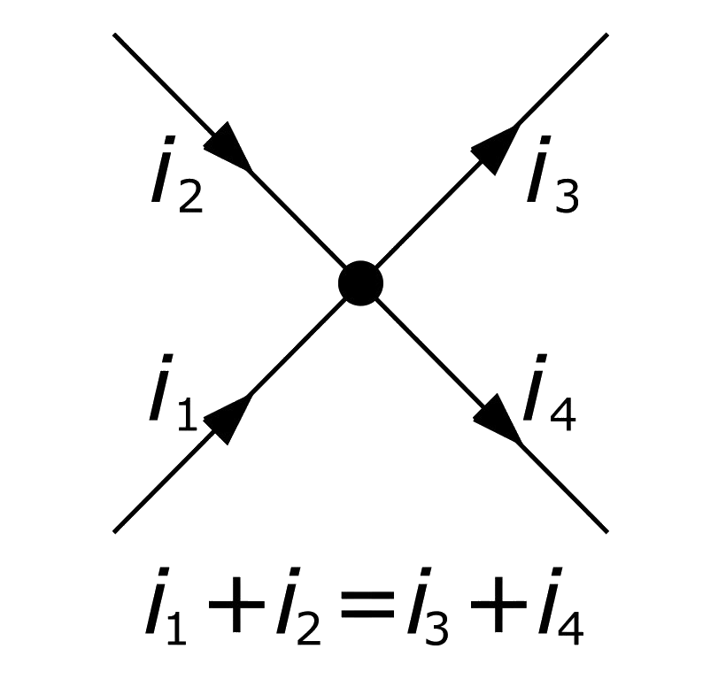
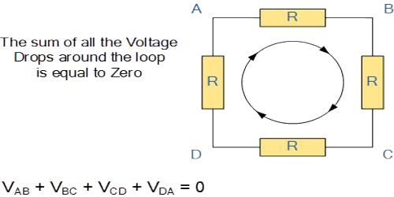
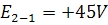
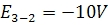
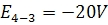
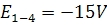
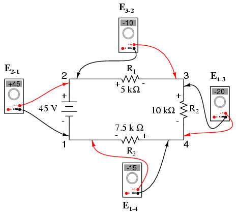

When a voltage is specified with a double subscript (the characters "2-1" in the notation "E2-1"), it means the voltage at the first point (2) as measured in reference to the second point (1). A voltage specified as "Ecg" would mean the voltage as indicated by a digital meter with the red test lead on point "c" and the black test lead on point "g": the voltage at "c" in reference to "g".If we were to take that same voltmeter and measure the voltage drop across each resistor, stepping around the circuit in a clockwise direction with the red test lead of our meter on the point ahead and the black test lead on the point behind, we would obtain the following readings:




We should already be familiar with the general principle for series circuits stating that individual voltage drops add up to the total applied voltage, but measuring voltage drops in this manner and paying attention to the polarity (mathematical sign) of the readings reveals another facet of this principle; that the voltages measured as such all add up to zero:
.jpg)
This principle is known as Kirchhoff's Voltage Law (discovered in 1847 by Gustav R. Kirchhoff, a German physicist), and it can be stated as such:
"The algebraic sum of all voltages in a loop must equal zero."
By algebraic, it means accounting for signs (polarities) as well as magnitudes. By loop, it means any path traced from one point in a circuit around to other points in that circuit, and finally back to the initial point. In the above example the loop was formed by following the points in this order: 1-2-3-4-1. It doesn't matter which point we start at or which direction we proceed in tracing the loop; the voltage sum will still equal zero. To demonstrate, we can tally up the voltages in loop 3-2-1-4-3 of the same circuit:
.jpg)
This can be easily verified using the simulator to create the above mentioned circuit and measuring the voltages across the resistances using the voltmeter, in a clockwise direction.